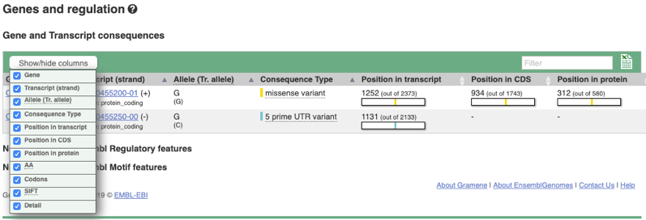

Columnas Ocultas
Problema:Visualizar en el número de columnas relevantes para el análisis

- Asociación (relacionado a)
- Agregación (tiene un)
- Especialización (es un)
El patrón se crea instanciando un administrador de columnas (clase “ColumnManager”). La clase “DataTable” representa a una tabla (un componente visual de la interfaz de usuario que contiene filas y columnas para mostrar los datos) la cual contendrá el administrador de columnas para ocultar/mostrar columnas. La tabla es poblada con datos provenientes de la clase “DataView”; una vista creada con los datos de las entidades del Modelo Conceptual del Genoma que se quiere listar en la tabla. El conjunto de columnas que forman la tabla es obtenido a partir de los datos de la vista y cada columna es una instancia de la clase “Column”, donde los atributos “id” y “isVisible” representan el identificador de la columna y su estado binario de visibilidad (es decir, visible, no visible).
El administrador de columnas es un panel visual que muestra las columnas de la tabla tanto las visibles como las no visibles y permite al usuario cambiar el estado visible de cada columna. El panel se muestra una vez que el usuario solicita su apertura (evento “showColumnManager”) en el componente tabla. En el panel visual, el usuario cambia el estado de visualización de las columnas que desea ocultar o visualizar y cada cambio es capturado por el administrador (evento “changeVisibility”). El conjunto de cambios se convierte en la nueva configuración de columnas. Cuando el usuario guarda esta configuración (evento “saveConfiguration”), el administrador solicita a la tabla actualizar sus datos (evento “updateData”) con la nueva configuración de columnas (“listColumns).

Ejemplos de implementación de este patrón se encuentran en las interfaces de las aplicaciones: GENESIS 2.0.